Instrumentos de Cuerda

Arpa
Instrumento de cuerda elegante y melódico.
Precio: $8,500 MXN
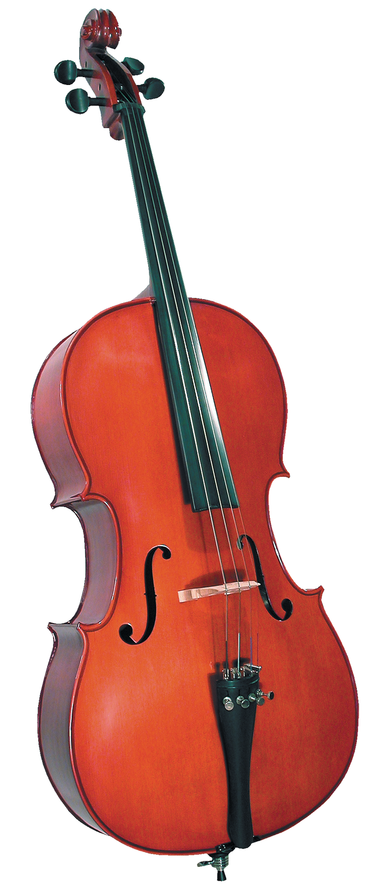
Contrabajo
Instrumento grave de gran presencia sonora.
Precio: $24,000 MXN

Guitarra Eléctrica
Instrumento moderno con sonido amplificado.
Precio: $12,500 MXN

Guitarra Acústica
Sonido natural, cálido y versátil.
Precio: $4,800 MXN
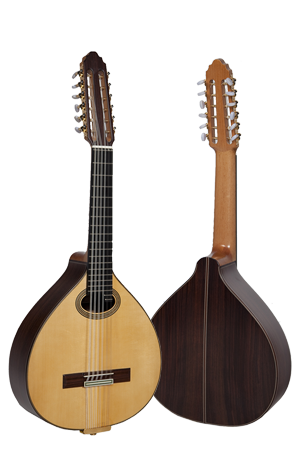
Laúd
Instrumento antiguo de sonido refinado.
Precio: $7,800 MXN
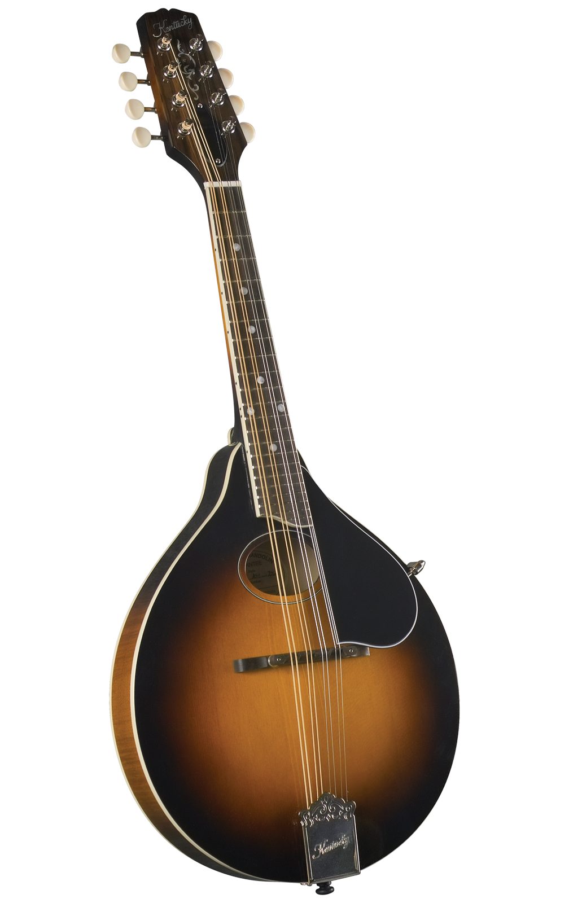
Mandolina
Instrumento pequeño de sonido brillante.
Precio: $5,200 MXN
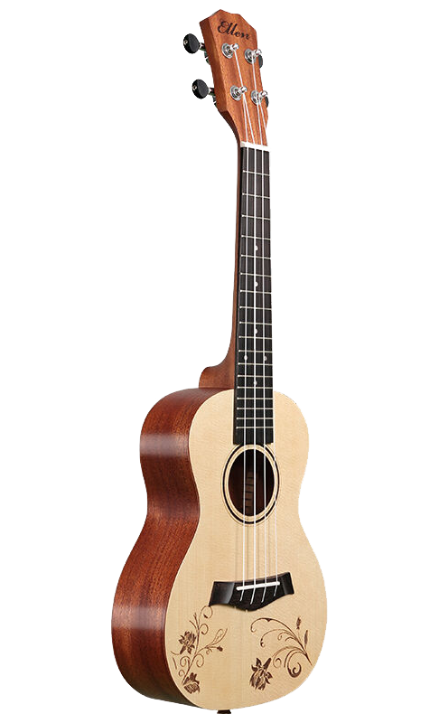
Ukelele
Instrumento ligero de sonido alegre.
Precio: $2,300 MXN
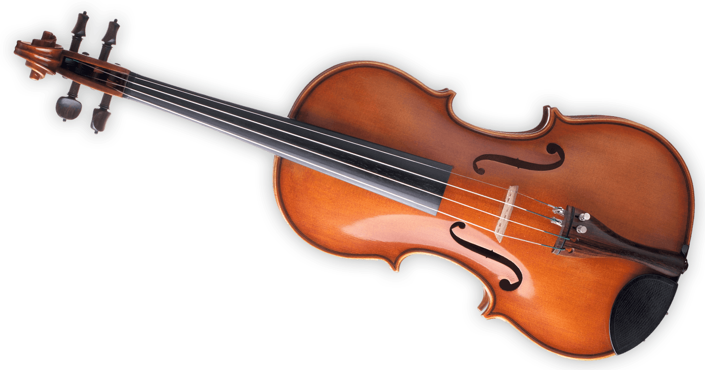
Viola
Sonido profundo dentro de la cuerda frotada.
Precio: $9,800 MXN

Violín
Instrumento clásico de gran expresividad.
Precio: $6,500 MXN
Instrumentos de Percusión
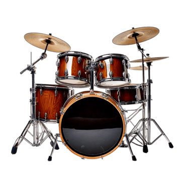
Batería
Conjunto rítmico usado en muchos géneros.
Precio: $16,000 MXN
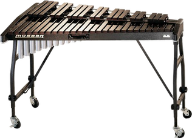
Xilófono
Percusión melódica de sonido brillante.
Precio: $3,400 MXN
Instrumentos de Viento
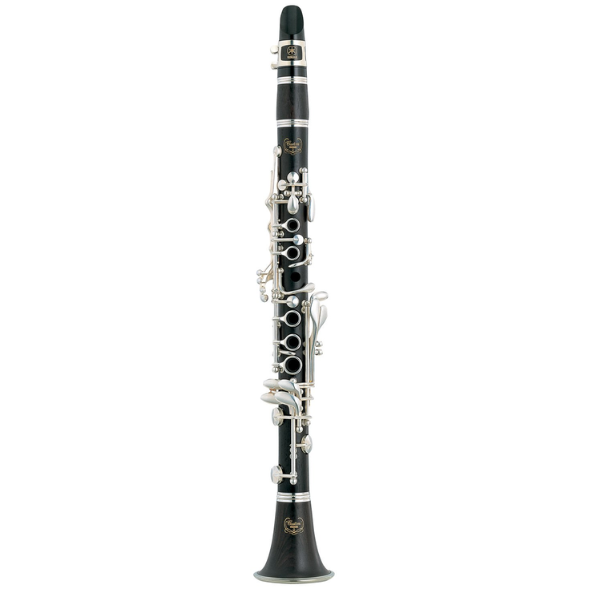
Clarinete
Instrumento de viento madera expresivo.
Precio: $7,200 MXN

Corno Francés
Instrumento metálico de sonido noble.
Precio: $23,000 MXN

Fagot
Viento madera de registro grave.
Precio: $28,000 MXN
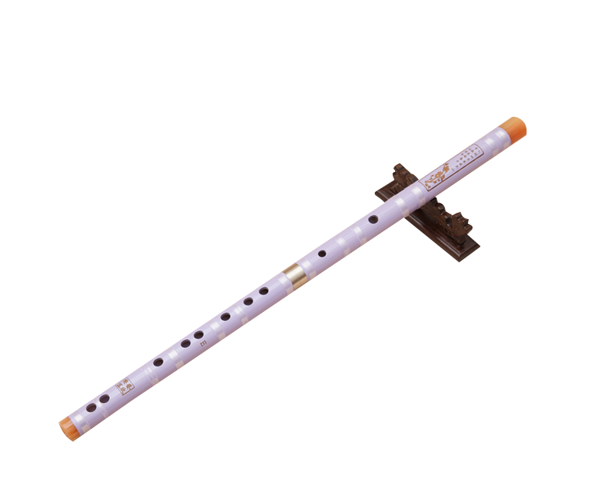
Flauta
Instrumento ligero de sonido claro.
Precio: $3,500 MXN
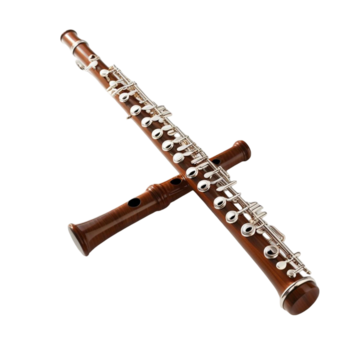
Oboe
Viento madera de sonido penetrante.
Precio: $16,000 MXN

Saxofón
Instrumento versátil y potente.
Precio: $9,800 MXN
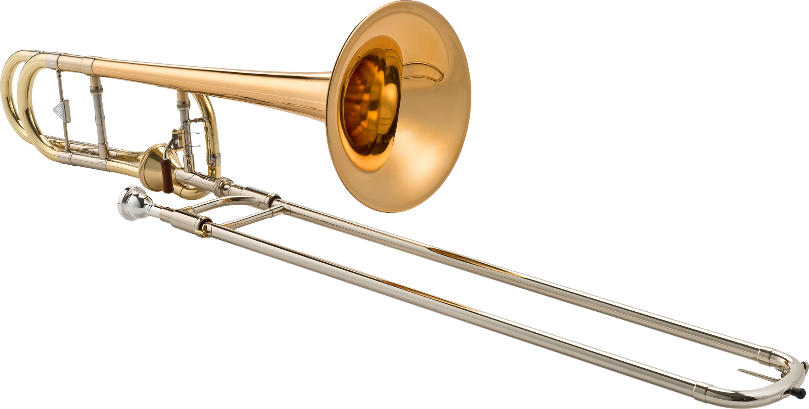
Trombón
Metal de sonido fuerte y profundo.
Precio: $14,000 MXN
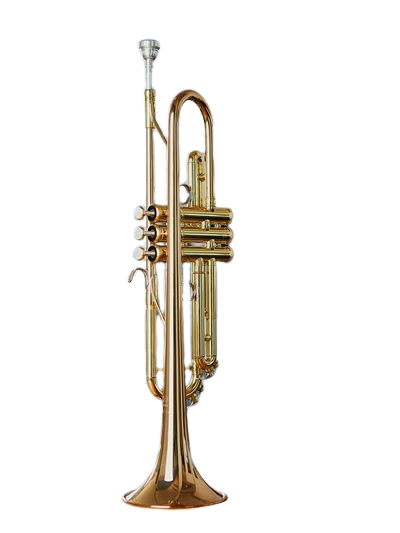
Trompeta
Metal brillante de gran potencia.
Precio: $7,900 MXN
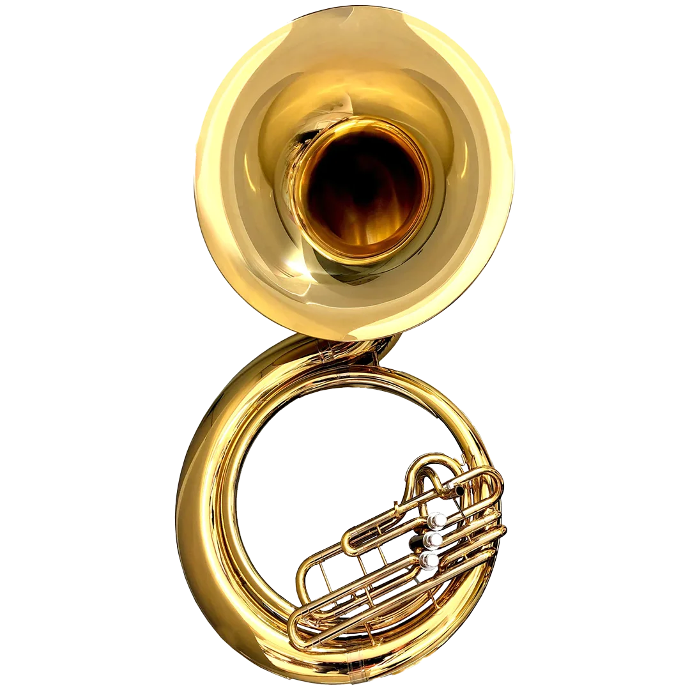
Tuba
Instrumento grave de la familia de metal.
Precio: $30,000 MXN